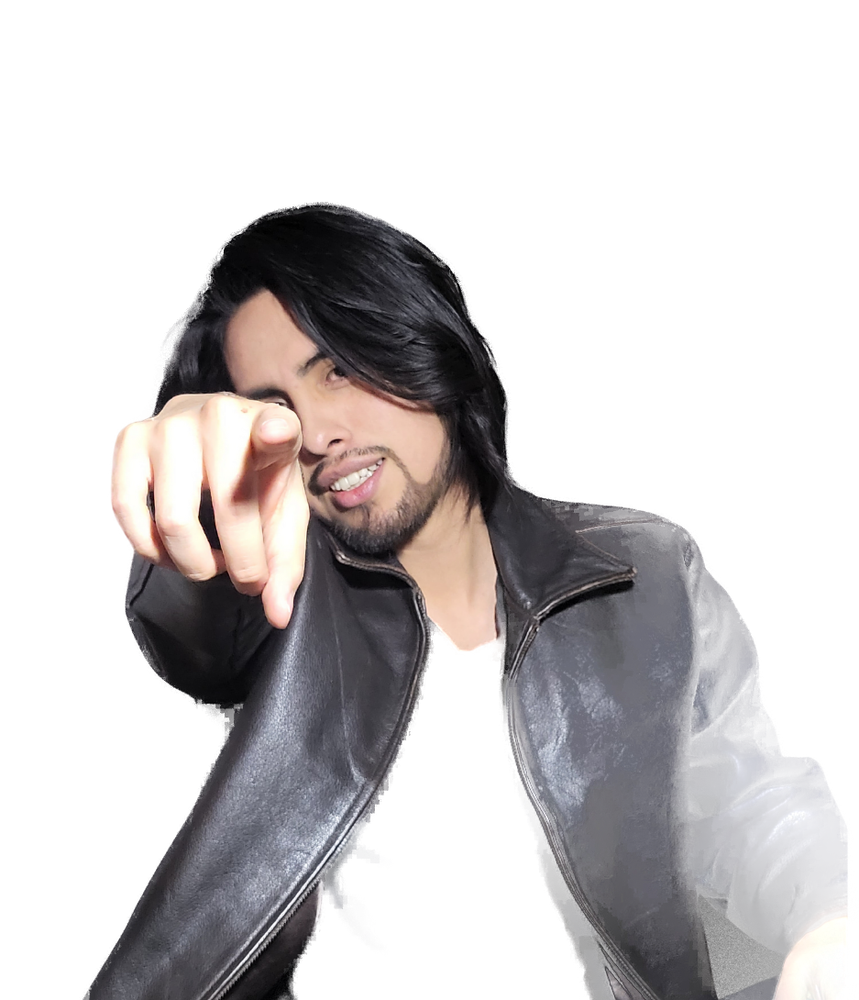

01
Growth Marketing
Experimentos y optimización continua para atraer, convertir y retener más clientes.
Growth Marketing · Influencer Marketing · Go-to-Market Strategy
Ayudo a negocios y marcas a atraer más clientes y convertirlos en ingresos, con un sistema de crecimiento claro, medible y sin improvisación.
Reservar mi diagnóstico gratuito30 a 40 minutos · Sin costo · Cupos limitados por semana

El problema
Si algo de esto le suena familiar, el problema no es el esfuerzo. Es la falta de un sistema.
Las redes tienen movimiento, pero los mensajes de clientes reales no llegan.
Gasta en anuncios o influencers y no puede decir cuánto volvió en ventas.
Los clientes llegan por suerte o por contactos, y no de forma predecible.
Prueba tácticas sueltas en lugar de seguir una estrategia de mercado definida.
Y el obstáculo más grande
Usted domina su producto y su mercado local, pero vender por internet, llegar a clientes de otras ciudades o países y hacer crecer su marca más allá de su entorno parece un terreno desconocido. No es falta de talento ni de ganas: es que nadie le ha mostrado el proceso de digitalización paso a paso.
Ese camino existe, y se recorre con un plan. Eso es exactamente lo que construimos juntos.
Quiero digitalizar mi negocioLa solución
Primero entendemos dónde está usted, luego diseñamos la ruta y después la ejecutamos midiendo cada resultado.
Analizamos su oferta, su audiencia y sus canales para encontrar dónde se está perdiendo el dinero.
Definimos a quién le vende, por qué canal y con qué mensaje, con objetivos medibles.
Activamos campañas y sistemas, y revisamos las métricas que importan: clientes e ingresos.
Servicios
Cuatro áreas, un mismo criterio: que cada acción tenga un resultado medible.
Experimentos y optimización continua para atraer, convertir y retener más clientes.
Campañas, colaboraciones y patrocinios con creadores, y crecimiento de sus cuentas.
La ruta para llevar su oferta al mercado correcto y vender de forma predecible.
Sistemas de captación y venta que generan y atienden clientes de forma automática, sin depender de hacerlo todo a mano.
También ofrezco asesoría y mentoría individual.
Sistemas comerciales
Diseño sistemas que convierten el interés en conversaciones y las conversaciones en ventas, de forma ordenada, medible y repetible.
Atraemos a las personas correctas hacia su negocio con campañas y contenido, sin depender de referidos.
Convertimos ese interés en citas y ventas con embudos, mensajes y procesos de seguimiento claros.
Automatizamos lo repetitivo con herramientas sin código, para que el sistema funcione cada día sin hacerlo todo a mano.
Quién soy
Llevo más de 10 años diseñando estrategias de crecimiento para marcas, negocios y creadores de contenido en distintos países.
He trabajado desde campañas con marcas globales hasta emprendimientos que dan sus primeros pasos digitales. Me enfoco en lo que realmente mueve un negocio: clientes, ventas y sistemas que escalan.
Resultados
Dos casos reales de captación de clientes para inmobiliarias, medidos de principio a fin: desde el anuncio hasta la venta.
Embudo de captación con anuncios, calificación de prospectos y agendamiento de citas.
Mismo sistema aplicado a otro producto y mercado, con resultados medidos en cada etapa.
ROAS calculado sobre las comisiones generadas frente a la inversión publicitaria.
Antes de escribirme
Prefiero trabajar con quien puede aprovecharlo. Esto le ahorra tiempo a ambos.
Preguntas frecuentes
Conversamos de 30 a 40 minutos sobre su negocio, su situación actual y lo que quiere lograr. Al final le digo con franqueza qué haría y si tiene sentido trabajar juntos.
Funciona mejor en negocios que ya tienen un producto o servicio que se vende y quieren crecer: pymes, comercios, startups, marcas y creadores. Si todavía no tiene nada que ofrecer, primero conviene validar la oferta antes de invertir en crecimiento.
No prometo resultados garantizados, y conviene desconfiar de quien lo haga. Lo que sí hago es definir métricas claras desde el inicio, medirlas y ajustar con datos, para que usted siempre sepa qué está funcionando y qué no.
El diagnóstico no tiene costo. Lo demás se cotiza según su caso, después de entender qué necesita.
Sí. Trabajo con marcas que quieren hacer Influencer Marketing y también con creadores UGC e influencers que quieren crecer, conseguir patrocinios y colaboraciones.
Solo necesita tener claro qué vende, a quién le vende hoy, cómo consigue sus clientes actualmente y qué resultado quiere lograr. No hace falta preparar presentaciones ni cifras exactas.
Reviso los mensajes personalmente y le respondo en un máximo de 24 horas para coordinar el diagnóstico. Como los cupos son limitados por semana, conviene escribir con anticipación.
Siguiente paso
Cuénteme brevemente qué busca. Atiendo solo unos pocos diagnósticos por semana y los agendo personalmente.